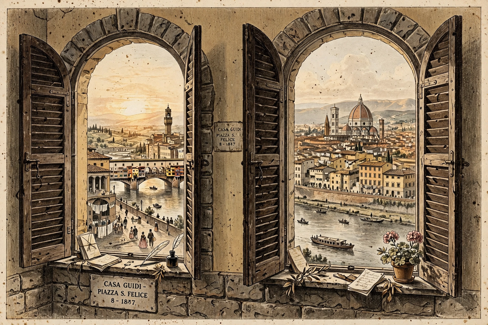

From Wikipedia, the free encyclopedia
| Born | 7 May 1812 Camberwell, London, England |
|---|---|
| Died | 12 December 1889 (aged 77) Venice, Italy |
| Occupation | Poet, playwright |
| Notable works | Men and Women, The Ring and the Book, "My Last Duchess" |
| Spouse | Elizabeth Barrett Browning (m. 1846; died 1861) |
Robert Browning (7 May 1812 – 12 December 1889) was an English poet and playwright whose mastery of the dramatic monologue made him one of the foremost Victorian poets. In monologues such as "My Last Duchess", "Fra Lippo Lippi" and "Andrea del Sarto" he created speakers who unwittingly reveal their characters while defending themselves.

The Brownings lived in Florence for most of their marriage.
Browning was born in Camberwell, London, the son of a Bank of England clerk with a large library, and was largely self-educated. Early works influenced by Shelley — Pauline (1833), Paracelsus (1835) and the difficult Sordello (1840) — brought more obscurity than fame. In 1845 he began corresponding with the invalid poet Elizabeth Barrett; they married secretly in 1846 against her father's wishes and eloped to Italy, living chiefly at Casa Guidi in Florence. After Elizabeth's death in 1861, Browning returned to London, though he continued to spend much time in Italy, and died in Venice in 1889. He is buried in Poets' Corner, Westminster Abbey.
The volumes Dramatic Lyrics (1842), Dramatic Romances and Lyrics (1845) and above all Men and Women (1855) contain his finest monologues: "My Last Duchess", in which a Renaissance duke coolly confesses to disposing of his wife; "The Bishop Orders His Tomb"; "Fra Lippo Lippi"; "Andrea del Sarto"; and "Childe Roland to the Dark Tower Came". His fame was sealed by The Ring and the Book (1868–69), a 21,000-line verse novel presenting a seventeenth-century Roman murder trial through twelve monologues — a study of how truth fragments among witnesses.
Browning's verse is colloquial, energetic and syntactically dense, saturated with irony: the reader must judge speakers who convict themselves. The dramatic monologue as perfected by Browning (and Tennyson) influenced Ezra Pound, T. S. Eliot and Robert Frost. His vigorous optimism — "Grow old along with me! / The best is yet to be" — made him a Victorian sage, though modern readers value the darker psychological studies most.